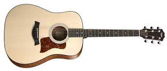
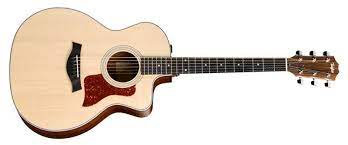
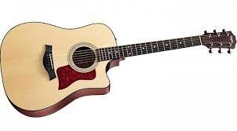

Taylor Guitars, una compañia estadounidense que en sus más de 40 años se ha convertido en un referente de la fabricacion de este instrumento. Profesionales y amantes de la guitarra de todo el mundo coinciden en que Taylor es una marca inigualable, entre otras cosas por la pureza de sus materiales y estricto proceso de fabricacion, por la elegancia y belleza de sus instrumentos.La historia de Taylor Guitars comienza en 1972 cuando Bob Taylor ingresa a trabajar en la tienda ‘American Dream’ donde ya era empleado Kurt Listug. En 1974, Sam Radding dueño de la tienda, decide venderla por lo que Taylor y Listug la compran y cambian el nombre a ‘Music Company Westland’.
HISTORIA
. En 1974, Sam Radding dueño de la tienda, decide venderla por lo que Taylor y Listug la compran y cambian el nombre a ‘Music Company Westland’. Factory Tour - Taylor Guitars Ambos comienzan la remodelacion de las guitarras ya existentes cambiando sus clavijeros. Debido a que deseaban exhibir en los mismos un logotipo compacto y adecuado al tamaño, cambian una vez más el nombre de la empresa por el que actualmente la conocemos, Taylor. Dos años despues de haber comprado American Dream y convertida en Taylor, comienza la venta de las guitarras fabricadas mediante minoristas. Tras afrontar dificultades economicas y poder sortearlas, compraron nuevos equipos para la fabrica, lo que aumentó la producción de guitarras acusticas exportadas a todo el mundo y desde 2005 de guitarras electricas, aunque las primeras siguen siendo su fuerte. Actualmente, Taylor Guitars cuenta con dos fabricas, la principal en El Cajon, California y otra en Tecate (Mexico) donde se construyen las series guitarras de gama baja de la marca.
| Parte | Imagen | Descripción |
|---|---|---|
| 100 series |  | Las guitarras de esta serie son hechas con nogal, sitka maciza, y su cuello es de perfil delgado lo que facilita el tocarla. |
| 200 series |  | Guitarras elegantes hechas con palisandro, koa hawaiana, palorrosa y abeto, que suenan bien en cualquier estilo musical. |
| 300 series |  | Se trata de guitarras hechas con madera genuina: sapele solido emparejado con abeto o madera negra con caoba, con detalles como las incrustaciones en el diapasón con forma de diamante. |
Que artistas usan guitarras Taylor Guitars?
La lista de artistas de todo el mundo que usan Taylor Guitars es extensa, pero para que te hagas una idea aqui tienes algunos nombres:,Alan Parsons Amy Macdonald,Bacon Brothers.,Clay Cook,Elise Trouw,George Strait,Jade Bird,Jason Mraz,John Petrucci,Kenny Greenberg,Sam Beam,Shawn Mende, Suzanne Veg.Tony Iommi y Zac Brown Band.